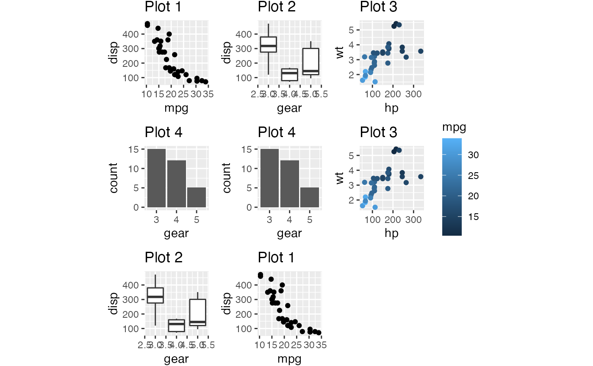
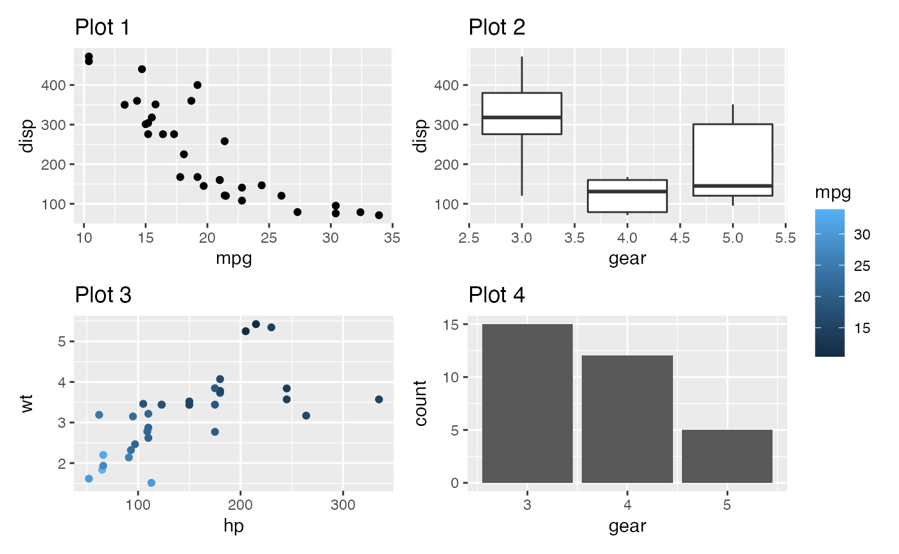
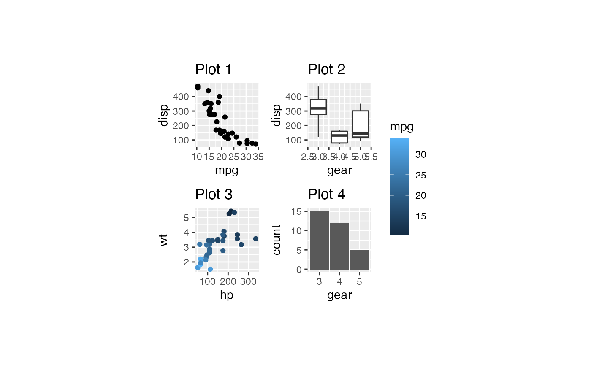

Generate demo plots
# devtools::install_github("thomasp85/patchwork")
library(tidyverse)
library(patchwork)
library(bro)
p1 <- ggplot(mtcars) +
geom_point(aes(mpg, disp)) +
ggtitle('Plot 1')
p2 <- ggplot(mtcars) +
geom_boxplot(aes(gear, disp, group = gear)) +
ggtitle('Plot 2')
p3 <- ggplot(mtcars) +
geom_point(aes(hp, wt, colour = mpg)) +
ggtitle('Plot 3')
p4 <- ggplot(mtcars) +
geom_bar(aes(gear)) +
ggtitle('Plot 4')
patchwork1 <-
p1 + p2 + p3 + p4 +
plot_layout(
ncol = 4,
widths = unit(c(50, 25, 50, 25), "mm"),
heights = unit(50, "mm"),
guides = "collect"
)
patchwork2 <-
p1 + p2 + p3 + p4 +
plot_layout(
ncol = 4,
widths = unit(c(50, 25, 50, 205), "mm"),
heights = unit(25, "mm"),
guides = "collect"
)
patchwork3 <-
p1 + p2 + p3 + p4 +
plot_layout(
ncol = 4
)# test bro_get_ggsize -----------------------------------------------------
bro_get_ggsize(p1)
#> width height
#> NA NA
bro_get_ggsize(list(p1, p2, p3))
#> width height
#> NA NA
bro_get_ggsize(list(patchwork1, patchwork2, patchwork3))
#> width height
#> 16.00079 2.76727
bro_get_ggsize(patchwork1)
#> width height
#> 8.914177 2.767270
bro_get_ggsize(patchwork2)
#> width height
#> 16.000791 1.783018
bro_get_ggsize(patchwork3)
#> width height
#> NA NA# test bro_ggsave_paged --------------------------------------------------
# bro_ggsave_paged(p1, "test.pdf")
# bro_ggsave_paged(list(p1, p2, p3), "test.pdf")
# bro_ggsave_paged(list(patchwork1, patchwork2, patchwork3), "test.pdf")
# bro_ggsave_paged(patchwork1, "test.pdf")
# bro_ggsave_paged(patchwork2, "test.pdf")
# bro_ggsave_paged(patchwork3, "test.pdf")# test bro_wrap_plots_paged -----------------------------------------------
plots <-
list(p1, p2, p3, p4, p4, p3, p2, p1)
plots %>% bro_wrap_plots_paged()
#> [[1]]

#>
#> [[2]]
plots %>% bro_wrap_plots_paged(ncol = 2, nrow = 2,
width = unit(20, "mm"), height = unit(20, "mm"))
#> [[1]]
#>
#> [[2]]
# plots %>% bro_wrap_plots_paged(ncol = 2, nrow = 2, width = unit(20, "mm"), height = unit(20, "mm")) %>%
# bro_ggsave_paged("test.pdf")
#
# plots %>% bro_wrap_plots_paged(ncol = 6, nrow = 6, width = unit(40, "mm"), height = unit(40, "mm")) %>%
# bro_ggsave_paged("test.pdf")
#
# plots %>% bro_wrap_plots_paged(ncol = 3, nrow = 3) %>%
# bro_ggsave_paged("test.pdf")
#
# plots %>% bro_wrap_plots_paged(ncol = 6, nrow = 6) %>%
# bro_ggsave_paged("test.pdf")# test bro_facet_wrap_paged -----------------------------------------------
bro_dataset_expression
#> # A tibble: 336 x 7
#> external_gene_n… genotype timepoint sample_type animal_number expression
#> <chr> <chr> <chr> <chr> <chr> <dbl>
#> 1 Mxd3 TDP43.M… 14w TRAP 508 24.3
#> 2 Mxd3 WT 14w SC 556 9.24
#> 3 Mxd3 TDP43.M… 14w SC 557 12.1
#> 4 Mxd3 TDP43.M… 14w SC 566 7.81
#> 5 Mxd3 TDP43.M… 14w TRAP 566 69.3
#> 6 Mxd3 TDP43.M… 14w SC 578 12.5
#> 7 Mxd3 TDP43.M… 14w TRAP 578 27.5
#> 8 Mxd3 TDP43.M… 14w SC 579 24.0
#> 9 Mxd3 TDP43.M… 14w TRAP 579 29.6
#> 10 Mxd3 WT 9w SC 605 13.5
#> # … with 326 more rows, and 1 more variable: sample <chr>
p5 <-
bro_dataset_expression %>%
ggplot(aes(genotype, expression, color = sample_type)) +
geom_boxplot(width = 0.6, position = position_dodge(width = 0.8))
p5 %>% bro_facet_wrap_paged(facet_var = external_gene_name)
#> [[1]]
p5 %>% bro_facet_wrap_paged(facet_var = external_gene_name,
width = unit(35, "mm"), height = unit(35, "mm"))
#> [[1]]

#>
#> [[2]]p5 %>% bro_facet_wrap_paged(facet_var = external_gene_name, ncol = 2, nrow = 2,
width = unit(35, "mm"), height = unit(35, "mm"))
#> [[1]]
#>
#> [[2]]
# p1 %>% bro_facet_wrap_paged(facet_var = cyl, ncol = 1, nrow = 1, width = unit(20, "mm"), height = unit(20, "mm")) %>%
# bro_ggsave_paged("test.pdf")
#
# p1 %>% bro_facet_wrap_paged(facet_var = cyl, ncol = 2, nrow = 2, width = unit(20, "mm"), height = unit(20, "mm")) %>%
# bro_ggsave_paged("test.pdf")
#
# p1 %>% bro_facet_wrap_paged(facet_var = cyl, ncol = 2, nrow = 2, width = unit(20, "mm"), height = unit(20, "mm")) %>%
# bro_ggsave_paged("test.png")
#
# p1 %>% bro_facet_wrap_paged(facet_var = cyl, ncol = 2, nrow = 2) %>%
# bro_ggsave_paged("test.png")# test bro_set_panel_size -------------------------------------------------
p1 + plot_layout(widths = unit(40, "mm"), heights = unit(40, "mm"))
{p1 + facet_wrap(vars(cyl)) + plot_layout(widths = unit(40, "mm"), heights = unit(40, "mm"))} %>%
bro_ggsave_paged("test.pdf")
#> Saving 2.22 x 2.61 in image (adjusted to absolute plot dimensions)
bro_set_panel_size(p1, unit(40, "mm"), unit(40, "mm"))

Problems with bro_set_panel_size()
Most of the times the gtables widths are not korrekt.
p <- ggplot(mtcars) + geom_point(aes(mpg, disp))
p_sized <- p + plot_layout(widths = unit(40, "mm"), heights = unit(40, "mm"))
fw <- p + facet_wrap(vars(cyl))
fw_sized <- fw + plot_layout(widths = unit(40, "mm"), heights = unit(40, "mm"))
pw <- wrap_plots(list(p1, p2, p3))
pw_sized <- wrap_plots(list(p1, p2, p3), widths = unit(40, "mm"), heights = unit(40, "mm"))
patchwork:::plot_table(p, 'auto')$widths
#> [1] 5.5pt 0cm 0mm
#> [4] 0mm 1grobwidth sum(1grobwidth, 2.75pt)
#> [7] 0mm 1null 0mm
#> [10] 0cm 0cm 0mm
#> [13] 0mm 0pt 5.5pt
patchwork:::plot_table(p_sized, 'auto')$widths
#> [1] 1.93302891933029mm 0mm 0mm 0mm
#> [5] 4.56095483509917mm 6.91935845800368mm 0mm 40mm
#> [9] 0mm 0mm 0mm 0mm
#> [13] 0mm 0mm 1.93302891933029mm
patchwork:::plot_table(fw, 'auto')$widths
#> [1] 5.5pt 0cm 0mm
#> [4] 0mm 1grobwidth 0.691935845800368cm
#> [7] 0mm 1null 0cm
#> [10] 5.5pt 0cm 1null
#> [13] 0cm 5.5pt 0cm
#> [16] 1null 0mm 0cm
#> [19] 0cm 0mm 0mm
#> [22] 0pt 5.5pt
patchwork:::plot_table(fw_sized, 'auto')$widths
#> [1] 1.93302891933029mm 0mm 0mm 0mm
#> [5] 4.56095483509917mm 6.91935845800368mm 0mm 40mm
#> [9] 0mm 0mm 0mm 0mm
#> [13] 0mm 0mm 1.93302891933029mm
patchwork:::plot_table(pw, 'auto')$widths
#> [1] 1.93302891933029mm 0mm 0mm 0mm
#> [5] 4.56095483509917mm 6.91935845800368mm 0mm 1null
#> [9] 0mm 0mm 0mm 0mm
#> [13] 0mm 0mm 1.93302891933029mm 1.93302891933029mm
#> [17] 0mm 0mm 0mm 4.56095483509917mm
#> [21] 6.91935845800368mm 0mm 1null 0mm
#> [25] 0mm 0mm 0mm 0mm
#> [29] 0mm 1.93302891933029mm 1.93302891933029mm 0mm
#> [33] 0mm 0mm 4.56095483509917mm 3.46627011486022mm
#> [37] 0mm 1null 0mm 0mm
#> [41] 0mm 3.86605783866058mm 15.3481749329168mm 0mm
#> [45] 1.93302891933029mm
patchwork:::plot_table(pw_sized, 'auto')$widths
#> [1] 1.93302891933029mm 0mm 0mm 0mm
#> [5] 4.56095483509917mm 6.91935845800368mm 0mm 40mm
#> [9] 0mm 0mm 0mm 0mm
#> [13] 0mm 0mm 1.93302891933029mm 1.93302891933029mm
#> [17] 0mm 0mm 0mm 4.56095483509917mm
#> [21] 6.91935845800368mm 0mm 40mm 0mm
#> [25] 0mm 0mm 0mm 0mm
#> [29] 0mm 1.93302891933029mm 1.93302891933029mm 0mm
#> [33] 0mm 0mm 4.56095483509917mm 3.46627011486022mm
#> [37] 0mm 40mm 0mm 0mm
#> [41] 0mm 3.86605783866058mm 15.3481749329168mm 0mm
#> [45] 1.93302891933029mm
#######################
fw <-
ggplot(mtcars) +
geom_point(aes(mpg, disp)) +
facet_wrap(vars(cyl))
fw